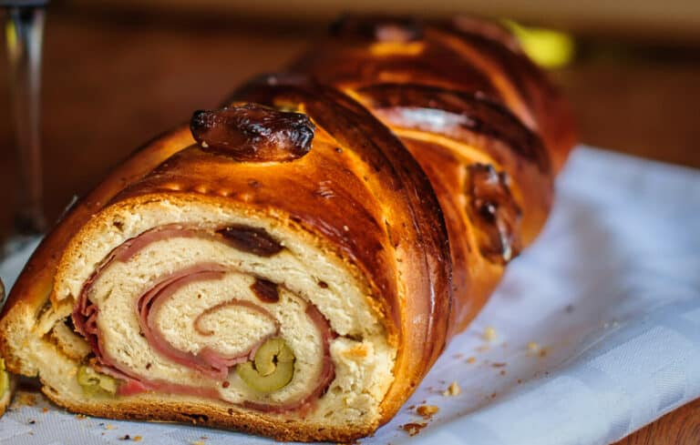

Bread

Description
Receta para preparar pan de jamón navideño. Comida típica venezolana.
Recipes
- 400 grs de harina de trigo todo uso
- 12 grs de levadura fresca en caso de utilizar instantánea seca se usa la mitad
- 140 grs de agua templada
- 80 l grs de leche íquida
- 10 grs de mantequilla
- 1 huevo
- 8 grs de sal
- 20 grs de azúcar
- 250 grs de jamón planchado
- Pasas y aceitunas al gusto
Steps
- Pon la harina en un bowl haciendo un volcán. En un borde de este volcán coloca el azúcar y la sal y en el borde contrario la levadura. Activa la levadura con el agua y deja reposar por diez minutos.
- Agrega el huevo y la leche. Posteriormente mezcla todos los ingredientes amasando hasta obtener una masa lisa.
- Añade la mantequilla hasta integrar, luego lleva la masa a un bowl con un poquito de harina en la base (para que no se pegue la masa) y deja reposar en un lugar tibio y sin corrientes de aire hasta que doble su tamaño (a esto se le llama "leudar").
- Al leudar, saca la masa del bowl y desgasifícala aplanándola un poco con las manos. Estira la masa sobre una mesa ligeramente enharinada con ayuda de un rodillo.
- Pon una capa de jamón sobre la masa, y si gustas, unas tiras de tocineta ahumada. Encima del jamón pon las pasas y aceitunas.
- Dale forma al pan enrollándolo. Cierra el borde y dóblalo hacia abajo haciendo presión para que selle bien y no se salga el relleno.
- -Pon la masa en una bandeja de horno y deja leudar nuevamente hasta que doble su tamaño. Barniza con un poco de huevo batido mezclado con agua.
- - Hornea por unos 20 minutos a 180ºC o hasta que doren los panes.